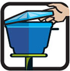
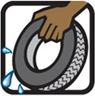
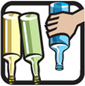
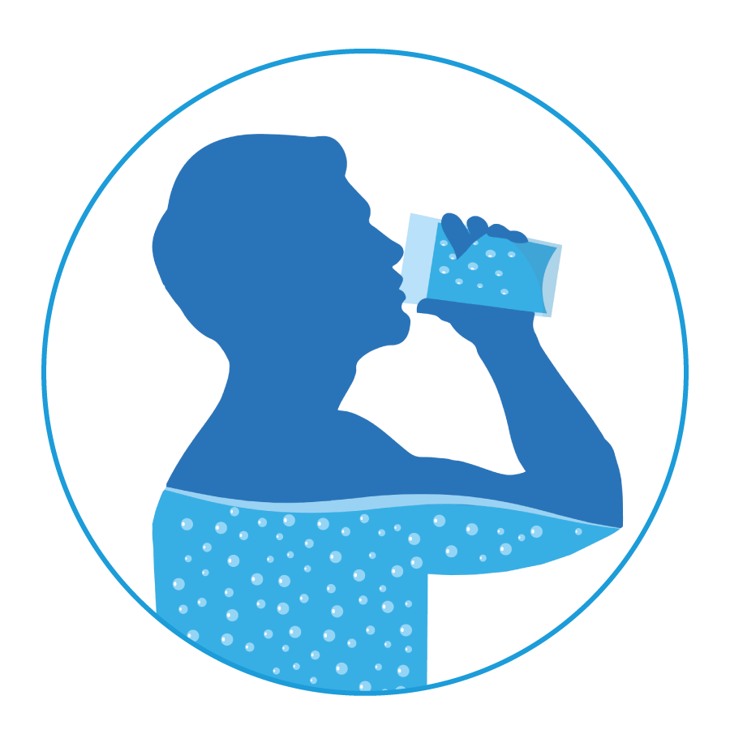
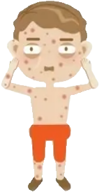
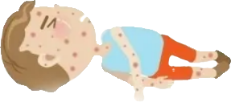
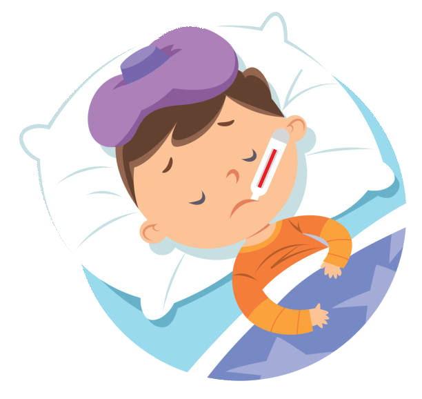
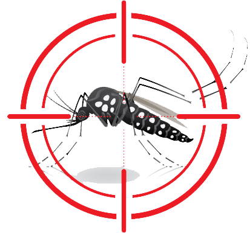

Mantenha a caixa d'água sempre fechada com tampa adequada.
Encha de areia até a borda os pratinhos dos vasos de planta.
Remova folhas, galhos e tudo que possa impedir a água de correr pelas calhas.
Coloque o lixo em sacos plásticos e mantenha a lixeira bem fechada. Não jogue lixo em terrenos baldios.
Guarde seus pneus velhos sem água e em local coberto.
Guarde garrafas sempre de cabeça pra baixo.
Está com sintomas?
Procure atendimento em uma unidade de saúde!
Não se automedique, é perigoso
Há medicamento que são contra indicados, então siga corretamente as prescrições do seu médico.
Repouse e se hidrate
O autocuidado e a hidratação são essenciais para a recuperação.
Atenção, dengue mata!
Há casos de dengue grave que pode haver a necessidade de internação. Fique atento ao desenvolvimento dos sintomas.

Dores de cabeça
Dores no corpo
Febre alta
Náuseas e vômitos
Manchas na pele
Fraqueza e cansaço
O que é dengue?
É uma doença infecciosa causada por um vírus e transmitida pelo mosquito Aedes aegypti infectado.
Quem é o agente transmissor?
O mosquito Aedes aegypti é o principal vetor de dengue no mundo.
Como a dengue é transmitida para o homem?
Após ter sido picado por um mosquito fêmea infectado, a pessoa apresenta sintomas da doença depois de um período que pode variar de 03 a 15dias.
Como o mosquito da dengue é infectado?
Ao picar uma pessoa que apresenta vírus da dengue no sangue, o mosquito se infecta e após um período de aproximadamente 10 dias, está apto a transmitir a doença para outras pessoas.
Qual o período de transmissibilidade?
O período que uma pessoa pode passar a doença para o mosquito começa um dia antes do aparecimento dos sintomas e vai até o sexto dia da doença, período em que o vírus está presente no sangue.